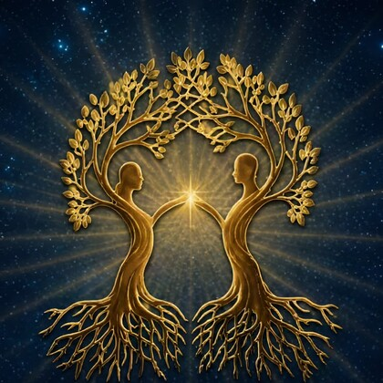
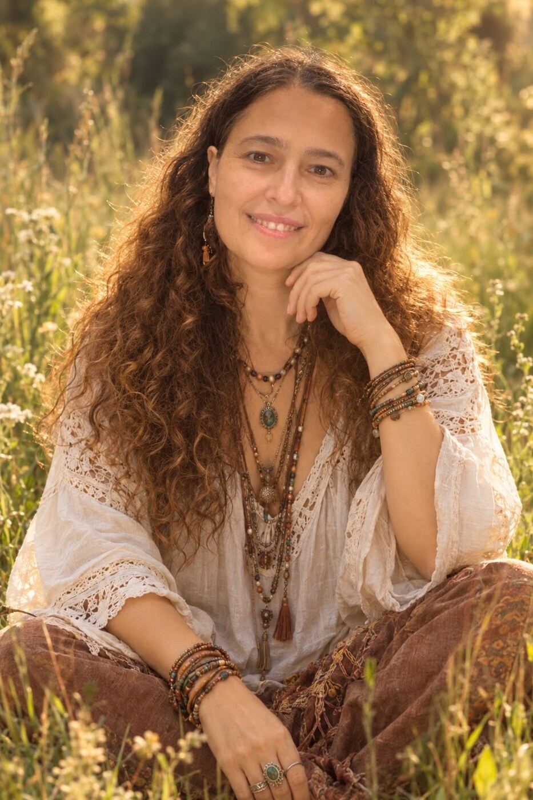
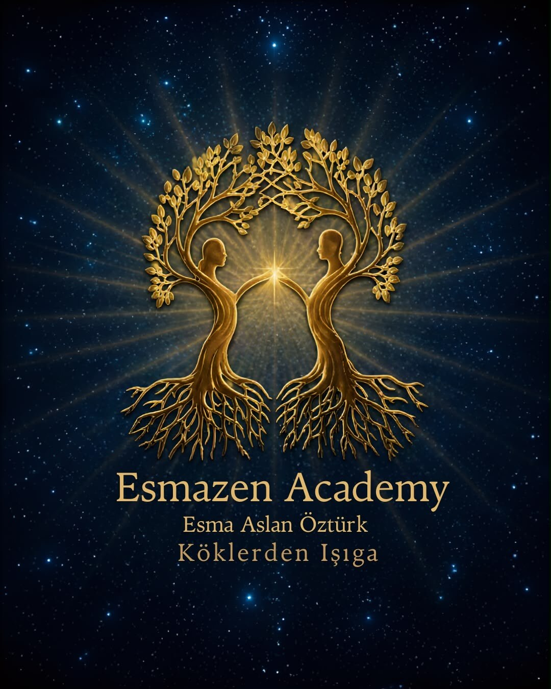

JAAS 1. Seviye Uygulayıcılık Eğitimi
Belirli tarihlerde grup çalışması olarak düzenlenir.

Esmazen Academy Köklerden IşığaKişisel Gelişim ve Dönüşüm Rehberliği
Değişim bazen dışarıdaki koşullar değiştiğinde değil; kendimizi, yaşadıklarımızı ve tekrarlarımızı farklı bir yerden görmeye başladığımızda mümkün olur.
Esma Aslan Öztürk

Yargısız alan
Bütünsel farkındalık
Online ve yüz yüze çalışmalar
Ben Esma
20 yıldır bir hemşire olarak insanın bedenine, acısına ve hayatına dokunuyor; üç çocuk annesi olmanın kattığı derin tecrübelerle yaşamı keşfetmeye devam ediyorum.
Kendi içsel yolculuğumda karanlığımı aydınlatırken, başka canlara da eşlik ederken buldum kendimi. Bugün amacım kimseye hazır cevaplar vermek değil; kişinin kendi deneyimini fark edebileceği, içsel kaynaklarını keşfedebileceği ve hikâyesine yeni bir gözle bakabileceği güvenli bir alan açmak.
Mükemmel olmayı değil, kendimiz olabilmeyi; her şeyi bilmek yerine öğrenmeye açık kalmayı, yargılamak yerine anlamaya çalışmayı önemsiyorum.
Çalışmalar
Her çalışma, kişinin ihtiyacına ve kendi ritmine göre ele alınır.
Bu çalışmalar kişisel gelişim ve farkındalık amacı taşır; tıbbi veya psikolojik tanı, tedavi ya da terapi yerine geçmez.

Esmazen Academy
Esmazen Academy; mesleki birikimin, annelik tecrübelerinin, kişisel dönüşüm yollarının ve paylaşma arzusunun buluştuğu ortak bir alan.
Çünkü en anlamlı değişimler bazen kendimize sorduğumuz yeni bir soruyla, fark ettiğimiz küçük bir gerçekle veya hikâyemize başka bir açıdan bakabildiğimiz tek bir anla başlar.
Birlikte başlayalımDünyanın her yerinden
Çalışmaların önemli bir bölümü Zoom üzerinden gerçekleştirilir. Bulunduğun yerden, yalnızca sakin ve rahatsız edilmeyeceğin bir alan ayırman yeterlidir.
Online seans sorEğitimler ve Atölyeler
Belirli tarihlerde grup çalışması olarak düzenlenir.
Bütünsel farkındalık eğitim programı.
Öz sevgi, anne soyu, baba soyu ve iç çocuk temalı atölyeler.
Yaklaşan eğitim tarihleri ve kayıt bilgileri için iletişime geçebilirsiniz.
Merak Ettiklerin
Evet. Birçok çalışma Zoom üzerinden online olarak gerçekleştirilebilir.
Önce üzerinde çalışmak istediğin konuyu ve deneyimlerini konuşuruz. Ardından sürecin nasıl ilerleyebileceğini birlikte değerlendirip seansı planlarız.
Hayır. Çalışma, danışanın kendisiyle bireysel veya grup formatında yürütülebilir.
Hayır. Çalışmalar farkındalık ve kişisel gelişim amacı taşır. Sağlıkla ilgili bir konuda doktorunuzun veya ilgili sağlık profesyonelinin önerilerini takip etmeniz önemlidir.
İlk Adım
Üzerinde çalışmak istediğin konuyu paylaş; sana uygun seans formatını birlikte değerlendirelim.